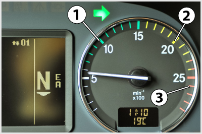

<!DOCTYPE html>
<html lang="hu">
<head>
    <meta charset="UTF-8" />
    <meta name="viewport" content="width=device-width, initial-scale=1.0" />
    <title>Belsőégésű motorok – „C” kategória - Szerkezeti és üzemeltetési ismeretek</title>
    <meta property="og:site_name" content="KRESZ teszt &ndash; „C” kategória - Szerkezeti és üzemeltetési ismeretek" />
    <meta property="og:description" content="Belsőégésű motorok kérdések és helyes válaszok („C” kategória - Szerkezeti és üzemeltetési ismeretek)" />
    <link rel="stylesheet" href="../test.css" />
</head>
<body>
    <div class="topic-header">
        <nav class="topic-breadcrumbs">
            <a href="index.html" class="crumb-link">&laquo; „C” kategória - Szerkezeti és üzemeltetési ismeretek témakörei</a>
            <span class="crumb-sep">/</span>
            <span class="crumb-current">Belsőégésű motorok</span>
            <span class="crumb-sep">/</span>
            <a href="../../index.html" class="crumb-home">Interaktív teszt &raquo;</a>
        </nav>

        <div class="topic-title-section">
            <span class="topic-badge">Témakör 3 / 24</span>
            <h2>Belsőégésű motorok <small class="topic-badge-info">(24 kérdés, vizsgán: Otto és dízel) működése, felépítése                    (1 db., 1 pont)</small></h2>
        </div>

        <div class="topic-nav-bar">
            <a href="group-1668680156.html" class="nav-btn nav-prev-btn" title="Tachográf">&laquo; Előző témakör</a>
            <a href="index.html" class="nav-btn nav-hub-btn">Témakörök listája</a>
            <a href="group-1668680345.html" class="nav-btn nav-next-btn" title="Dízelmotorok tüzelőanyagellátó rendszerei">Következő témakör &raquo;</a>
        </div>
    </div>

    <div class="group" id="group-1668680218">
        <div class="questions">
            <div class="question" id="question-704404">
                                                                        <!-- <h4>59. A dízelmotorok fajlagos tüzelőanyag-fogyasztása az Otto-motorokéhoz képest...</h4> -->
                        <dl>
                            <dt>59. A dízelmotorok fajlagos tüzelőanyag-fogyasztása az Otto-motorokéhoz képest... <a href="#question-704404"><small>#704404</small></a></dt>
                                                            <dd class="correct">alacsonyabb.</dd>
                                                            <dd class="">ugyanannyi.</dd>
                                                            <dd class="">magasabb.</dd>
                                                    </dl>
                    </div>
                                                            <div class="question" id="question-704453">
                                                                        <!-- <h4>60. Melyik állítás igaz a négyütemű dízel- és Otto-motorokra?</h4> -->
                        <dl>
                            <dt>60. Melyik állítás igaz a négyütemű dízel- és Otto-motorokra? <a href="#question-704453"><small>#704453</small></a></dt>
                                                            <dd class="correct">Szívó- és kipufogónyílásait szelepek nyitják, illetve zárják.</dd>
                                                            <dd class="">Szívónyílását a dugattyú, kipufogónyílását szelep nyitja és zárja.</dd>
                                                            <dd class="">Kipufogónyílását a dugattyú, szívónyílását szelep nyitja és zárja.</dd>
                                                            <dd class="">Résvezérléssel működnek, szívó- és kipufogónyílásait is a dugattyú nyitja és zárja.</dd>
                                                    </dl>
                    </div>
                                                            <div class="question" id="question-704492">
                                                                        <!-- <h4>61. Melyik igaz a négyütemű dízelmotorra az alábbi megállapítások közül?</h4> -->
                        <dl>
                            <dt>61. Melyik igaz a négyütemű dízelmotorra az alábbi megállapítások közül? <a href="#question-704492"><small>#704492</small></a></dt>
                                                            <dd class="correct">A felső holtpont előtt - az égéstérben összesűrített levegőbe - gázolajat porlaszt a befecskendező egység.</dd>
                                                            <dd class="">Külső keverékképzésű, tehát a hengertérbe a szívóütemben levegő-gázolaj keveréket szív be.</dd>
                                                            <dd class="">A felső holtpont közelében, a sűrítési ütem végén a befecskendezett gázolajat elektromos szikrával gyújtják meg.</dd>
                                                            <dd class="">A felső holtpont közelében, a sűrítési ütem végén a befecskendezett gázolajat az izzítógyertyával gyújtják meg.</dd>
                                                    </dl>
                    </div>
                                                            <div class="question" id="question-704605">
                                                                            <div class="exercise-image">
                                
                            </div>
                                                <!-- <h4>62. A képen látható motorfordulatszámmérőn a gazdaságos üzemelés fordulatszám-tartománya...</h4> -->
                        <dl>
                            <dt>62. A képen látható motorfordulatszámmérőn a gazdaságos üzemelés fordulatszám-tartománya... <a href="#question-704605"><small>#704605</small></a></dt>
                                                            <dd class="correct">a 700 és 1.500 1/min (percenkénti) motorfordulatszám közé esik.</dd>
                                                            <dd class="">az 1.500 és 2.500 1/min (percenkénti) motorfordulatszám közé esik.</dd>
                                                            <dd class="">a 2.500 és 3.000 1/min (percenkénti) motorfordulatszám közé esik.</dd>
                                                            <dd class="">a 700 és 1500 1/s (másodpercenkénti) motorfordulatszám közé esik.</dd>
                                                    </dl>
                    </div>
                                                            <div class="question" id="question-704722">
                                                                        <!-- <h4>63. Milyen ütem lehetséges a négyütemű Otto-, vagy dízelmotor hengerében, ha a dugattyú a felső holtpont felé mozog, és mind a szívó- mind a kipufogószelep zárva van?</h4> -->
                        <dl>
                            <dt>63. Milyen ütem lehetséges a négyütemű Otto-, vagy dízelmotor hengerében, ha a dugattyú a felső holtpont felé mozog, és mind a szívó- mind a kipufogószelep zárva van? <a href="#question-704722"><small>#704722</small></a></dt>
                                                            <dd class="correct">Sűrítés.</dd>
                                                            <dd class="">Kipufogás.</dd>
                                                            <dd class="">Terjeszkedés.</dd>
                                                            <dd class="">Szívás.</dd>
                                                    </dl>
                    </div>
                                                            <div class="question" id="question-704724">
                                                                        <!-- <h4>64. Mi a V-motorok alkalmazásának előnye a soros hengerelrendezéshez képest?</h4> -->
                        <dl>
                            <dt>64. Mi a V-motorok alkalmazásának előnye a soros hengerelrendezéshez képest? <a href="#question-704724"><small>#704724</small></a></dt>
                                                            <dd class="correct">Rövidebb, kompaktabb motor, jobb helykihasználással.</dd>
                                                            <dd class="">Nagyobb teljesítmény.</dd>
                                                            <dd class="">Magasabb fordulatszám.</dd>
                                                    </dl>
                    </div>
                                                            <div class="question" id="question-704736">
                                                                        <!-- <h4>65. Tehergépjárműveken általában hol helyezik el a motort?</h4> -->
                        <dl>
                            <dt>65. Tehergépjárműveken általában hol helyezik el a motort? <a href="#question-704736"><small>#704736</small></a></dt>
                                                            <dd class="correct">Legtöbb esetben a jármű elején (orrmotoros), esetenként az alváz alatt (alacsony belépésű fülke kialakítása érdekében).</dd>
                                                            <dd class="">Minden esetben a jármű elején (orrmotoros).</dd>
                                                            <dd class="">A jármű eljén (orrmotoros), és a jármű hátsó részében (farmotoros) egyaránt elhelyezhetik.</dd>
                                                    </dl>
                    </div>
                                                            <div class="question" id="question-704737">
                                                                        <!-- <h4>66. A mai, korszerű dízelmotorok égéstere többnyire...</h4> -->
                        <dl>
                            <dt>66. A mai, korszerű dízelmotorok égéstere többnyire... <a href="#question-704737"><small>#704737</small></a></dt>
                                                            <dd class="correct">osztatlan (a befecskendezés közvetlenül a hengertérbe történik).</dd>
                                                            <dd class="">előkamrás (a befecskendezés a hengerfejben kialakított előkamrába történik).</dd>
                                                            <dd class="">örvénykamrás (a befecskendezés a hengerfejben kialakított örvénykamrába történik).</dd>
                                                    </dl>
                    </div>
                                                            <div class="question" id="question-704839">
                                                                        <!-- <h4>67. Melyik motornak kisebb a kompresszióviszonya?</h4> -->
                        <dl>
                            <dt>67. Melyik motornak kisebb a kompresszióviszonya? <a href="#question-704839"><small>#704839</small></a></dt>
                                                            <dd class="correct">Az Otto-motornak.</dd>
                                                            <dd class="">A dízelmotornak.</dd>
                                                            <dd class="">Mindkét motornak közel azonos a kompresszióviszonya.</dd>
                                                    </dl>
                    </div>
                                                            <div class="question" id="question-704845">
                                                                        <!-- <h4>68. Milyen részekből áll a négyütemű motor forgattyús hajtóműve?</h4> -->
                        <dl>
                            <dt>68. Milyen részekből áll a négyütemű motor forgattyús hajtóműve? <a href="#question-704845"><small>#704845</small></a></dt>
                                                            <dd class="correct">Dugattyú, dugattyúcsap, hajtórúd, forgattyús tengely, lendítőkerék.</dd>
                                                            <dd class="">Henger, hengerfej, forgattyús ház, olajteknő.</dd>
                                                            <dd class="">Hengertömb, dugattyú, forgattyús ház, forgattyús tengely, olajteknő.</dd>
                                                    </dl>
                    </div>
                                                            <div class="question" id="question-704870">
                                                                        <!-- <h4>69. Mi a hengerfejtömítés feladata?</h4> -->
                        <dl>
                            <dt>69. Mi a hengerfejtömítés feladata? <a href="#question-704870"><small>#704870</small></a></dt>
                                                            <dd class="correct">A hengertér, a kenő- és hűtőfolyadékcsatornák, illetve a külvilág biztonságos elválasztása egymástól.</dd>
                                                            <dd class="">A hengerfej és a hengertömb elektromos szigetelése.</dd>
                                                            <dd class="">A kipufogó és szívócsonkok megfelelő tömítése.</dd>
                                                    </dl>
                    </div>
                                                            <div class="question" id="question-704883">
                                                                        <!-- <h4>70. Négyütemű dízelmotornál mit szív be a dugattyú a nyitott szívószelepen keresztül az égéstérbe?</h4> -->
                        <dl>
                            <dt>70. Négyütemű dízelmotornál mit szív be a dugattyú a nyitott szívószelepen keresztül az égéstérbe? <a href="#question-704883"><small>#704883</small></a></dt>
                                                            <dd class="correct">Levegőt.</dd>
                                                            <dd class="">Benzin-levegő keveréket.</dd>
                                                            <dd class="">Gázolaj-levegő keveréket.</dd>
                                                            <dd class="">Benzin-gázolaj-levegő keveréket.</dd>
                                                    </dl>
                    </div>
                                                            <div class="question" id="question-704905">
                                                                        <!-- <h4>71. Korszerű, osztatlan égésterű, négyütemű dízelmotornál eredeti térfogatának hányad részére sűríti össze a dugattyú a levegőt a hengerben?</h4> -->
                        <dl>
                            <dt>71. Korszerű, osztatlan égésterű, négyütemű dízelmotornál eredeti térfogatának hányad részére sűríti össze a dugattyú a levegőt a hengerben? <a href="#question-704905"><small>#704905</smalh<,%d>,mdt
  0 `(                       $ 0"                      `   <dd c�as1="correct&>!-14-1/18 részére.</d�>
H                                 ! �          0�p(         >dl!class="">1/9-1/13 ré�z��re.</dd>
                        0 `(                  `        �0 <dd class="">1/20-1/30 párzére.</dd>
 ! �   $ 0"  `    �0 "`(! ! � 0� `                   " 4ed cle1g7 >1/3-1/4 részére.</dd>
          ( $           ( $                       <'dL:
                " (!</div>
  $ 0"�  b     " (!    " (!        �4                     <Di�8cLess="question"4i47"quect)Gn�'04910">
                                          ! � �0                       !<�-/ $it6'2n(A$lӏ~elmotor hengerébe0b%necskendezg�|!%ázolajat...</h4> -%>-         �0 0 ` �00 `(<dl>
                       0 b <d4>7.0Abl˨zunmotob (mngerébe befecskendezett`gÀzl!ba|.* <a href="+qUastIo�=704910"><small>#704910</smalh>,-a></dt>
  `                           `     �  b      0 `(        <dd class="correct">a levegő összesűrítése következT�)ren fejlődő hő gyújtja meg.</dd>
               0 `( ( $         ` !�                      <f�(b.ass="">villamos GyC�jtószikra oy�*|ja -eg</d|>m         $ 2"(!                              �0            <dd clAs�-"">az előkamrában levő izzógyertya gy�:jt(a meg.</dd>
             4 p* ( $  �  b�  b              ( $0"        <dd class="">a fmlHavült dugattyú gyújtja�me%.</dd>
                                   $ 0"         0 `(</dl>
 0"                 </div>
        0 `(   `     �0�             " (!       ( $      <dmv0alass="question" ie=�qee3|ion-704916":
"            �  b                                                  � (c <!-) ,j4>73, Eht jelent a belső k�ve0ékképzés kifejez�)S;~-h<? -->
                      �,dl>
                  `   �    <dt>73. Mit j�le,� abbelső keverékképzés kkfmkezés? <a href="#1ueRtion-704916"><smed|'7059�6</small></a></dt>
                                                 `      ( 8D` class="correct">A levegő a tüzelőanyaggal a hengeren belѴ$	palá|k/rik és ott alakul ki a ke6er�+.<$d>$
$         ( $          �  b    " () $ �  b    ! �   ! �  <dl Chass="">A lewe�ő a(t�zedűenyaggal a sj��~ócső belce*˩ben találkozik( ӫs ott is ze�mredakǶssze.</dd~
 ( "$�1`�0       $ 0"( $                   0 `(         <dd class=" >I!l%veFő és a "en[in kever˩Ka a kerbw2ˡtor keverőterében alqk5d ki*<?f`>                                     ( $           </el�
  � �b b     �  b( 8?fiv>
         � 0b (4p:"              $"0*!     (!�a(�  0 `(   <div cLc�k4#qte�tion" id="question-?0=53">
                " (# *!(!               " (!0 @(�0            " (!     <�=- <h4>74. Melyik motornak0j/jb a0h!|ásfokA C�s ezáltal alacsonyabb a fajlagos tüzelőanyag-go�yaszt��U;�)�v8 =/>
 �2        ! �         <dl>
      " h!                 <dt>34�"�'lyik�mo6ornak jobb(alat��voka és e~ñntal alacsofyAfb a fajlagos tüzelőanyag-fogyasztása? 8a0jref= #ytestion-704953"><small>#704953</small></a></dt>
                                                            <dd class="correct">A dízelmotoré.</dd>
                                                            <dd class="">Az Otto-motoré.</dd>
                                                            <dd class="">A dízelmotor és az Otto-motor hatásfoka azonos.</dd>
                                                    </dl>
                    </div>
                                                            <div class="question" id="question-704955">
                                                                        <!-- <h4>75. Hogyan hat a hidraulikus szelephézag kiegyenlítő működése a szelephézag nagyságára?</h4> -->
                        <dl>
                            <dt>75. Hogyan hat a hidraulikus szelephézag kiegyenlítő működése a szelephézag nagyságára? <a href="#question-704955"><small>#704955</small></a></dt>
                                                            <dd class="correct">A szelepvezérlés a motor üzeme alatt mindig éppen hézagmentes állapotban üzemel.</dd>
                                                            <dd class="">A szelephézag értéke mindig a beállított legkisebb értéken tartható.</dd>
                                                            <dd class="">A szelephézag értéke két beállított szélsőérték között folyamatosan szabályozható.</dd>
                                                    </dl>
                    </div>
                                                            <div class="question" id="question-714514">
                                                                        <!-- <h4>76. A dízelmotorok sűrítési viszonya...</h4> -->
                        <dl>
                            <dt>76. A dízelmotorok sűrítési viszonya... <a href="#question-714514"><small>#714514</small></a></dt>
                                                            <dd class="correct">magasabb, mint az Otto-motoroké.</dd>
                                                            <dd class="">nem tér el lényegesen a Otto-motorokétól.</dd>
                                                            <dd class="">alacsonyabb, mint a Otto-motoroké.</dd>
                                                    </dl>
                    </div>
                                                            <div class="question" id="question-714515">
                                                                        <!-- <h4>77. Milyen ütem zajlik a négyütemű Otto- és dízelmotorok hengerében, amikor a dugattyú az alsó holtpont felé halad?</h4> -->
                        <dl>
                            <dt>77. Milyen ütem zajlik a négyütemű Otto- és dízelmotorok hengerében, amikor a dugattyú az alsó holtpont felé halad? <a href="#question-714515"><small>#714515</small></a></dt>
                                                            <dd class="correct">Szívás vagy expanzió (terjeszkedés).</dd>
                                                            <dd class="">Sűrítés.</dd>
                                                            <dd class="">Sűrítés vagy terjeszkedés.</dd>
                                                    </dl>
                    </div>
                                                            <div class="question" id="question-714516">
                                                                        <!-- <h4>78. Mitől indul meg a befecskendezett gázolaj égése a dízelmotorok hengerében?</h4> -->
                        <dl>
                            <dt>78. Mitől indul meg a befecskendezett gázolaj égése a dízelmotorok hengerében? <a href="#question-714516"><small>#714516</small></a></dt>
                                                            <dd class="correct">A nagy nyomás hatására létrejövő magas hőmérsékleten öngyulladás következik be.</dd>
                                                            <dd class="">Elektromos szikragyújtástól.</dd>
                                                            <dd class="">Elektromos izzítógyertya hatására.</dd>
                                                    </dl>
                    </div>
                                                            <div class="question" id="question-714517">
                                                                        <!-- <h4>79. Milyen ütem zajlik a négyütemű Otto- és dízelmotorok hengerében, amikor a dugattyú a felső holtpont felé halad?</h4> -->
                        <dl>
                            <dt>79. Milyen ütem zajlik a négyütemű Otto- és dízelmotorok hengerében, amikor a dugattyú a felső holtpont felé halad? <a href="#question-714517"><small>#714517</small></a></dt>
                                                            <dd class="correct">Kompresszió (sűrítés) vagy kipufogás.</dd>
                                                            <dd class="">Szívás vagy terjeszkedés.</dd>
                                                            <dd class="">Sűrítés vagy szívás.</dd>
                                                    </dl>
                    </div>
                                                            <div class="question" id="question-724162">
                                                                        <!-- <h4>80. A négyütemű Otto- és dízelmotorok...</h4> -->
                        <dl>
                            <dt>80. A négyütemű Otto- és dízelmotorok... <a href="#question-724162"><small>#724162</small></a></dt>
                                                            <dd class="correct">szívó- és kipufogónyílásait is szelepek nyitják, illetve zárják.</dd>
                                                            <dd class="">kipufogónyílását szelep nyitja és zárja, szívónyílása a henger falán található, amelyet a dugattyú nyit és zár.</dd>
                                                            <dd class="">résvezérléssel működnek, kipufogó- és szívónyílásaikat a dugattyú nyitja és zárja.</dd>
                                                            <dd class="">szívónyílását szelep nyitja és zárja, kipufogónyílása a henger falán található, amelyet a dugattyú nyit és zár.</dd>
                                                    </dl>
                    </div>
                                                            <div class="question" id="question-724163">
                                                                        <!-- <h4>81. A dízelmotorok sűrítési viszonya...</h4> -->
                        <dl>
                            <dt>81. A dízelmotorok sűrítési viszonya... <a href="#question-724163"><small>#724163</small></a></dt>
                                                            <dd class="correct">magasabb, mint a benzinmotoroké.</dd>
                                                            <dd class="">nem tér el lényegesen a benzinmotorokétól.</dd>
                                                            <dd class="">alacsonyabb, mint a benzinmotoroké.</dd>
                                                    </dl>
                    </div>
                                                            <div class="question" id="question-724164">
                                                                        <!-- <h4>82. Mit jelent a külső keverékképzés kifejezés?</h4> -->
                        <dl>
                            <dt>82. Mit jelent a külső keverékképzés kifejezés? <a href="#question-724164"><small>#724164</small></a></dt>
                                                            <dd class="correct">A tüzelőanyag és a levegő elkeveredése a munkatéren kívül (karburátorban, szívócsőben) történik.</dd>
                                                            <dd class="">A tüzelőanyag és a levegő elkeveredése az előkamrában történik.</dd>
                                                            <dd class="">A tüzelőanyag és a levegő elkeveredése a dugattyúkamrában történik.</dd>
                                                    </dl>
                    </div>
                                                            <div class="question" id="question-724168">
                                                                        <!-- <h4>83. Milyen részekből áll a motortest?</h4> -->
                        <dl>
                            <dt>83. Milyen részekből áll a motortest? <a href="#question-724168"><small>#724168</small></a></dt>
                                                            <dd class="correct">Hengerfej, henger, forgattyúsház, olajteknő.</dd>
                                                            <dd class="">Dugattyú, hajtórúd, forgattyústengely.</dd>
                                                            <dd class="">Dugattyú, vezérműtengely, szelepek.</dd>
                                                    </dl>
                    </div>
                                                            <div class="question" id="question-724169">
                                                                        <!-- <h4>84. Nyáron, nagy melegben miért csökken a motorok teljesítménye?</h4> -->
                        <dl>
                            <dt>84. Nyáron, nagy melegben miért csökken a motorok teljesítménye? <a href="#question-724169"><small>#724169</small></a></dt>
                                                            <dd class="correct">Mert kisebb a levegő sűrűsége és így a szívási ütemben a motorba jutó levegőmennyiség is kisebb.</dd>
                                                            <dd class="">Mert nagy melegben kisebb befecskendezési nyomást lehet alkalmazni.</dd>
                                                            <dd class="">Mert kisebb mértékben tud összekeveredni a meleg levegő a tüzelőanyaggal.</dd>
                                                    </dl>
                    </div>
                                                            <div class="question" id="question-724170">
                                                                        <!-- <h4>85. Mi a jelentése az OHC szelepvezérlésnek?</h4> -->
                        <dl>
                            <dt>85. Mi a jelentése az OHC szelepvezérlésnek? <a href="#question-724170"><small>#724170</small></a></dt>
                                                            <dd class="correct">Felülvezérelt, felülszelepelt szelepvezérlés.</dd>
                                                            <dd class="">Alulvezérelt, felülszelepelt szelepvezérlés.</dd>
                                                            <dd class="">Alulvezérelt, alulszelepelt szelepvezérlés.</dd>
                                                    </dl>
                    </div>
                                    </div>
        </div>
    </div>

    <div class="topic-footer-nav" style="margin-top: 40px;">
        <div class="topic-nav-bar">
            <a href="group-1668680156.html" class="nav-btn nav-prev-btn" title="Tachográf">&laquo; Előző témakör</a>
            <a href="index.html" class="nav-btn nav-hub-btn">Témakörök listája</a>
            <a href="#top" class="nav-btn nav-top-btn" onclick="window.scrollTo({top:0,behavior:'smooth'}); return false;">^ Tetejére</a>
            <a href="group-1668680345.html" class="nav-btn nav-next-btn" title="Dízelmotorok tüzelőanyagellátó rendszerei">Következő témakör &raquo;</a>
        </div>
        <p style="margin-top: 24px; text-align: center;"><a href="index.html" class="back-btn"><strong>&laquo; Vissza a „C” kategória - Szerkezeti és üzemeltetési ismeretek témaköreihez</strong></a></p>
    </div>

    <script src="../search.js"></script>
</body>
</html>